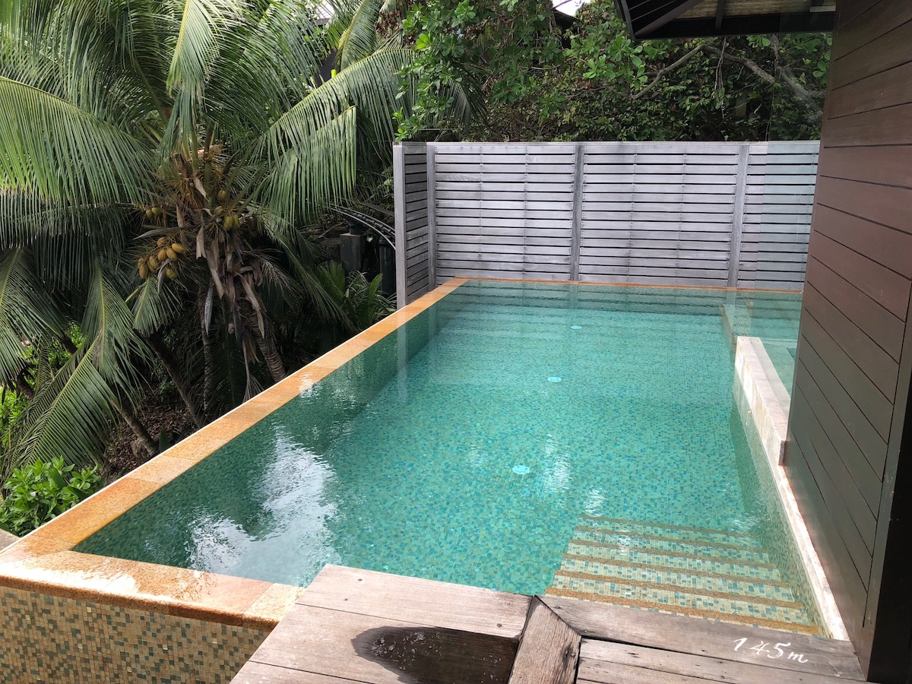

Цены на этот отель были намного ниже, чем я ожидал от отеля Autograph Collection в большом городе, но я смог забронировать проживание на одну ночь всего за 133 доллара после уплаты налогов.

Бронирование Four Seasons Seychelles
Мы провели восемь дней на Сейшельских островах, и когда мы забронировали эту поездку много месяцев назад, мы изначально забронировали пять ночей на острове Дерош в Four Seasons, который должен был стать «изюминкой» нашей поездки. Я расскажу больше об этом процессе бронирования, когда проверю этот отель, но мы забронировали там (общедоступный) предварительный тариф.
На наши три ночи на острове Маэ (главный остров Сейшельских островов) мы не знали, где хотим остановиться. Сначала мы собирались остановиться в Le Meridien Fisherman`s Cove, но Тиффани там не очень понравилось. Она сказала, что отель Hilton Seychelles Northolme был намного лучше, поэтому мы присматривались к нему. Тем не менее, для наших свиданий цена составляла около 500 евро, и, поскольку Tiffany (надеюсь) скоро рассмотрит это, я подумал, что нам следует попробовать что-нибудь еще.
Обзор Four Seasons Seychelles
Наш рейс из Парижа прибыл около 10 утра. Изначально мы планировали арендовать машину на Сейшельских островах, но из-за некоторых проблем в итоге взяли такси.



02
Место расположения
EMC2 расположен в прекрасном месте, всего в полутора кварталах от Мичиган-авеню и бесконечных магазинов и ресторанов Великолепной мили.
03
Регистрироваться
В центре Чикаго пространство в цене, и этот отель не потратил ни пяди. Фактически, я дважды прошел мимо входа, прежде чем сообразил, в какую дверь войти.
Ресторан Four Seasons Seychelles
А теперь взглянем на еду на курорте. Завтрак включен в стоимость проживания для всех гостей отеля Four Seasons и подается ежедневно в ресторане ZEZ с 7:00 до 10:30. Ресторан ZEZ находился недалеко от центра курорта, в нескольких лестничных пролетах вниз от стойки регистрации
READ MORE